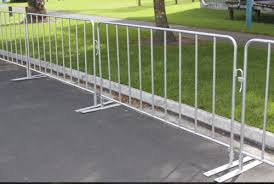

Cercado
Valla Tipo Popote

La valla tipo popote es ideal para delimitar espacios en eventos, marchas o concentraciones, ya que es ligera, fácil de instalar y permite un control adecuado del público.
La valla tipo popote es ideal para delimitar espacios en eventos, marchas o concentraciones, ya que es ligera, fácil de instalar y permite un control adecuado del público.